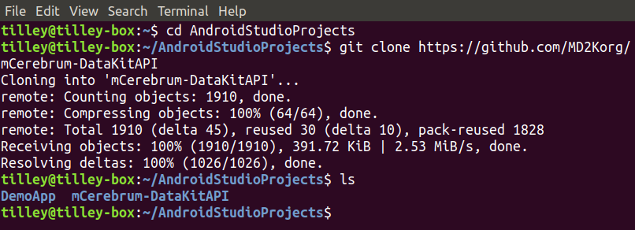

Implementing DataKit in an Android Application
Contents
• Setting Up the Development Environment
• Implementing DataKit
- Connect
- Register
- Subscribe
- Insert
- Query
Setting Up the Development Environment
Android Studio is the recommended IDE for working with MD2K code. Download Android Studio here.
A Demo application is available on GitHub. You will need to install DataKitAPI on your development device as well.
After installing Android Studio, start a new project. Make note of the project location. Advance through the project setup steps, then open a terminal and navigate to the directory where the project is located and run the following command:
git clone https://github.com/MD2Korg/mCerebrum-DataKitAPIThis will clone the DataKitAPI repository to your local machine so it can be implemented in your application. Your file structure should now look like this:

Next, edit settings.gradle to include the following lines:
include ':datakitapi'
project(':datakitapi').projectDir = new File('../mCerebrum-DataKitAPI/datakitapi') Edit the build.gradle file for the app module to include the following lines under dependencies:
releaseImplementation project(':datakitapi')
implementation project (path: ':datakitapi")
Gradle will prompt you to sync the project. If you are prompted to install any missing platforms, please do so. Once gradle is building without any errors or prompts, you are ready to start developing.
Implementing DataKit
DataKit has five main functions: connect, register, subscribe, insert, and query. These functions are somewhat interdependent. If DataKit has not been connected, for example, all other calls to it will fail.
The proper call order is (1) connect (2) register (3) subscribe [optional] (4) insert (5) query
To start working with DataKit, a few instance variables should be declared. In the demo application they are declared as such:
private DataKitAPI datakitapi;
private DataSourceClient regDataSourceClient = null;
private DataSourceClient subDataSourceClient = null;
private ArrayList dataTypeQuery = null;
private DataTypeDoubleArray dataTypeDoubleArray;
private DataTypeLong querySize;
private Boolean isHF;
When the main activity is created datakitapi should be initialized with the following line:
datakitapi = datakitapi.getInstance(this);
If a DataKitAPI instance already exists, it is returned by the getInstance() method. If not, then it constructs an new instance using the passed context.
Connect
After DataKitAPI is initialized, it should be connected. In the demo application, connect DataKitAPI by running the following code:
try {
if (datakitapi.isConnected()) {
disconnectDataKit();
} else
datakitapi.connect(new OnConnectionListener() {
@Override
public void onConnected() {
printMessage(R.string.dataKitConnected, output);
conButton.setText(R.string.disconnect_button);
}
});
} catch (DataKitException ignored) {
printMessage(ignored.getMessage(), output);
} DataKit can be disconnected using the same code shown above. Note: It is good practice to make sure that all DataSources are unsubscribed and unregistered before disconnecting DataKit. Not doing so can cause errors that can be rather difficult to track down. The demo application handles unsubscribing and unregistering in their own methods.
unsubscribeDataSource();
unregisterButton(false);
datakitapi.disconnect();
regDataSourceClient = null;
subDataSourceClient = null;
dataTypeQuery = null;
printMessage(R.string.dataKitDisconnected, output);
conButton.setText(R.string.connect_button); Register
The next function is registering a data source. Data sources are constructed from sensors. The demo application uses an accelerometer, but any sensor data can be used, including hardware-defined sensors and software-defined sensors.
To use a sensor for a data source, Android's Sensor, SensorManager, SensorEvent, and SensorEventListener classes must be imported. The class initializing the sensor must also implement SensorEventListener. The demo application initializes a SensorManager and Sensor instance variable upon creation. These variables can be initialized later as well.
// Gets sensor service
mSensorManager = (SensorManager) getSystemService(SENSOR_SERVICE);
// Sets the desired sensor
mSensor = mSensorManager.getDefaultSensor(Sensor.TYPE_ACCELEROMETER); The Android development documentation has a more in depth look at sensors here.
When registering a new data source, datakitapi.isConnected() should always be checked to ensure DataKitAPI is connected.
A data source must be built so it can be passed to DataKit for registration, such as:
public DataSourceBuilder buildDataSource() {
return new DataSourceBuilder().setType(DataSourceType.ACCELEROMETER);
} After the data source is built, it can be passed to DataKit for registration as shown below. Note: Data source registration is not the same as registering a SensorEventListener for the corresponding sensor. Data source registration registers a data source with DataKit. SensorEventListener registers a listener for a sensor with Android.
if (!(datakitapi.isConnected())) {
printMessage(R.string.errorNotConnected, output);
}
else if (regDataSourceClient == null) {
regDataSourceClient = datakitapi.register(buildDataSource());
regButton.setText(R.string.unregister_button);
printMessage(regDataSourceClient.getDataSource().getType() +
" registration successful", output);
} else {
unregisterButton(false);
} When unregistering a data source, it must also be unsubscribed and its sensor's listener must be unregistered. If unregistering multiple data sources, the data sources should be stored in an arraylist and iterated through, calling datakitapi.unregister() on each one individually. For example:
unregisterListener();
unsubscribeDataSource();
datakitapi.unregister(regDataSourceClient);
regDataSourceClient = null;
regButton.setText(R.string.register_button); Subscribe (optional)
Subscribing a data source registers a callback interface with DataKit that returns data as it is received by the database.
The code block below contains the logic for the subscribe button. An arraylist of DataSourceClient objects is created because DataKitAPI.find() returns an arraylist of matching DataSourceClient objects. After finding the desired data sources, the arraylist is iterated through and an OnReceiveListener is registered for each one individually.
ArrayList dataSourceClients;
try {
if (subDataSourceClient == null) {
dataSourceClients = datakitapi.find(buildDataSource(buildApplication()));
if(dataSourceClients.size() == 0) {
printMessage(R.string.errorNotRegistered, output);
} else {
subDataSourceClient = dataSourceClients.get(0);
// gets index 0 because there should only be one in this application
datakitapi.subscribe(subDataSourceClient, subscribeListener);
subButton.setText(R.string.unsubscribe_button);
printMessage(R.string.dataSourceSubscribed, output);
}
} else {
unsubscribeDataSource();
}
} catch (DataKitException ignored) {
subButton.setText(R.string.subscribe_button);
subDataSourceClient = null;
printMessage(ignored.getMessage(), output);
} This is an example of an OnReceiveListener:
public OnReceiveListener subscribeListener = new OnReceiveListener() {
@Override
public void onReceived(DataType dataType) {
printSample((DataTypeDoubleArray) dataType, subOutput);
}
}; Data sources should be unsubscribed individually as shown below:
datakitapi.unsubscribe(subDataSourceClient);
subDataSourceClient = null;
subButton.setText(R.string.subscribe_button);
printMessage(R.string.dataSourceUnsubscribed, output); Insert
DataKit has two methods for inserting data, insert() and insertHighFrequency(). Both methods are used in the demo application.
insert(), places each data point into a database as a row. The database is stored atAndroid/data/org.md2k.datakit/files/database.dbby default.insertHighFrequency(), writes the data to a.csv.gzfile which is stored atAndroid/data/org.md2k.datakit/files/raw/.
The following codeblock registers the sensor listener for the accelerometer:
if(regDataSourceClient != null) {
mSensorManager.registerListener(this, mSensor, SensorManager.SENSOR_DELAY_NORMAL);
insButton.setText(R.string.inserting);
} else {
printMessage(R.string.errorNotRegistered, output);
} The codeblock below is called whenever the accelerometer has new data. Gravity is divided out and then the data is inserted according to the UI switch. Implementing SensorEventListener requires two overridden methods, onSensorChanged() and onAccuracyChanged(). Only onSensorChanged() is used in the demo application, onAccuracyChanged() is left as a blank method.
@Override
public void onSensorChanged(SensorEvent event) {
long curTime = DateTime.getDateTime();
if ((double)(curTime - lastSaved) > minSampleTime) {
lastSaved = curTime;
double[] samples = new double[3];
samples[0] = event.values[0] / GRAVITY; // X axis
samples[1] = event.values[1] / GRAVITY; // Y axis
samples[2] = event.values[2] / GRAVITY; // Z axis
dataTypeDoubleArray = new DataTypeDoubleArray(curTime, samples);
if (isHF)
insertHFData(dataTypeDoubleArray);
else
insertData(dataTypeDoubleArray);
}
} This codeblock demonstrates a call to insert():
public void insertData(DataTypeDoubleArray data) {
try {
datakitapi.insert(regDataSourceClient, data);
} catch (DataKitException ignored) {
Log.e("database insert", ignored.getMessage());
printMessage(ignored.getMessage(), output);
}
} High frequency data is stored in an array.
public void insertHFData(DataTypeDoubleArray data) {
try {
datakitapi.insertHighFrequency(regDataSourceClient, data);
printSample(data, subOutput);
} catch (DataKitException ignored) {
Log.e("hf data insert", ignored.getMessage());
printMessage(ignored.getMessage(), output);
}
} Query
The last DataKit function to implement is query. There are several different ways to query DataKit. Two query methods are overloaded.
• query(DataSourceClient dataSourceClient, int last_n_sample)
Returns an arraylist of DataType objects.
• query(DataSourceClient dataSourceClient, long starttimestamp, long endtimestamp)
Returns an arraylist of DataType objects.
• queryFromPrimaryKey(DataSourceClient dataSourceClient, long lastSyncedKey, int limi)
Returns an arraylist of RowObject objects.
• querySize()
Returns a DataTypeLong object.
The query functions are fairly straight forward. find() is used as before to find available data sources. The difference here is that the data source is built with an application attribute. This attribute represents the application making the method call.
public Application buildApplication() {
return new ApplicationBuilder().setId(MainActivity.this.getPackageName()).build();
}
public DataSourceBuilder buildDataSource(Application application) {
return new DataSourceBuilder().setType(DataSourceType.ACCELEROMETER).setApplication(application);
} This codeblock demonstrates querying for the last 3 rows in the database:
try {
ArrayList dataSourceClients = datakitapi.find(buildDataSource(buildApplication()));
if (dataSourceClients.size() == 0) {
printMessage(R.string.errorNotRegistered, output);
} else {
querySize = datakitapi.querySize();
dataTypeQuery = datakitapi.query(dataSourceClients.get(0), 3);
if (dataTypeQuery.size() == 0) {
printMessage("query size zero", output);
} else
printQuery(dataTypeQuery);
}
} catch (DataKitException ignored) {
Log.e("query", ignored.getMessage());
dataTypeQuery = null;
printMessage(ignored.getMessage(), output);
}
If you have performed all of these functions, you have completed the process of implementing DataKit. Please visit the demo application on GitHub if you wish to see the code in context.